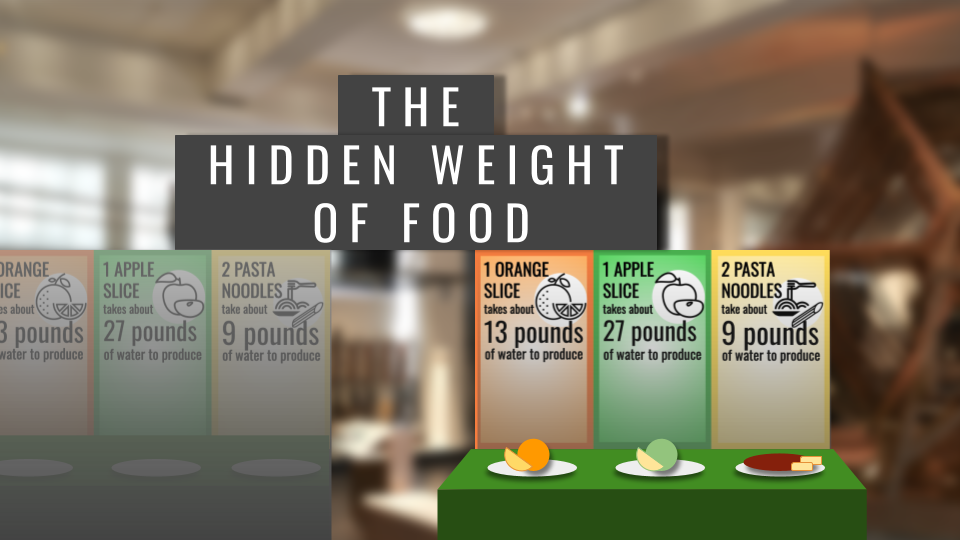
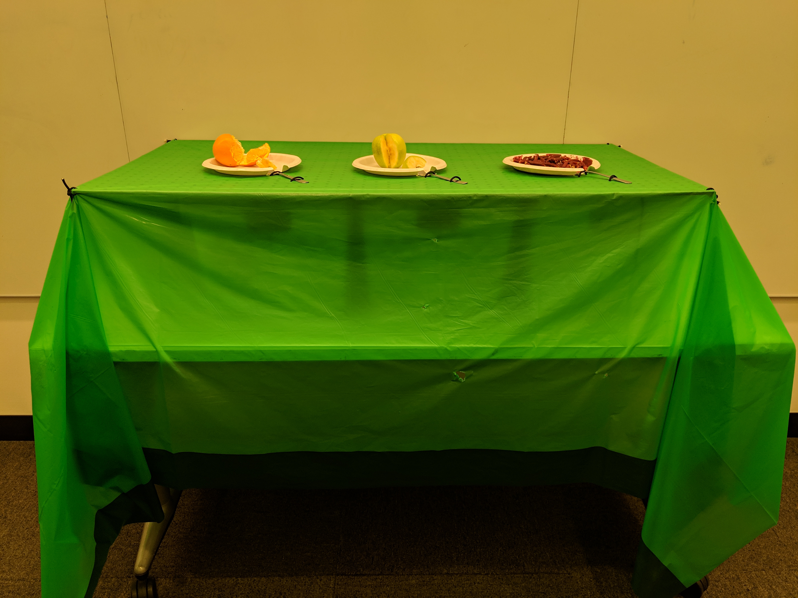
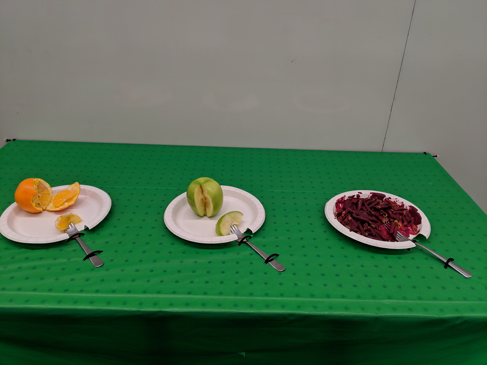
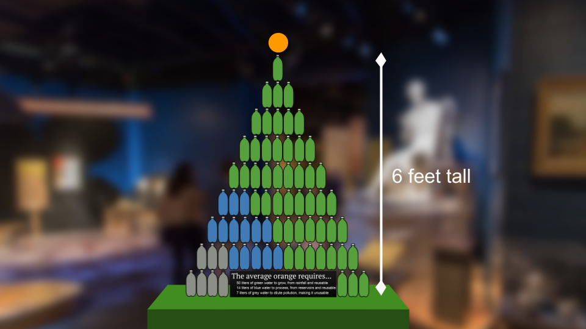
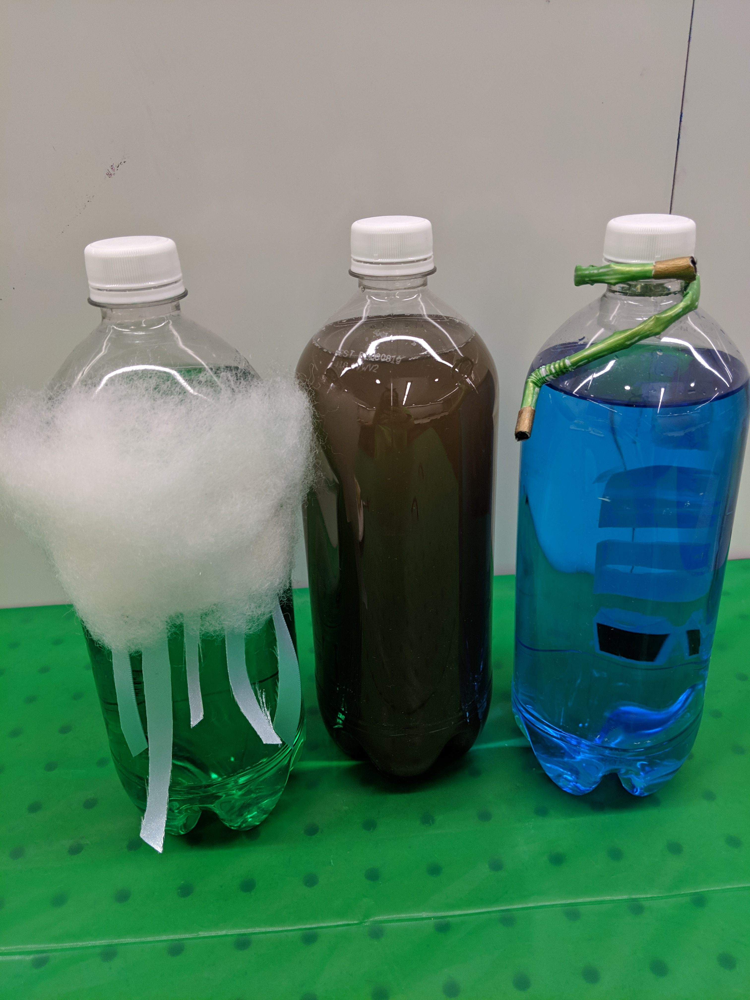

Group: Sarah Von Ahn, Amy Vogel, Theresa Machemer

The data say a lot of water is used to produce the food we eat. We want to tell this story because we don’t often think about the resources used to produce our food. We want to educate interested museum-goers, so that they can (a) make more informed consumer decisions to lower their water footprint and (b) learn about the ways that water is used to produce food.
Our audience is members of the public who visit science museums (e.g. families or field trip groups), with the interactive display targeted at youth audience members age 10 and up, due to its height and weight. The pyramid display is accessible to all ages, as its appearance is striking, and the descriptive sign adds detail but doesn’t provide information that is crucial to the display. Science museum-goers are primed to learn and expect to walk up to displays and interact with them, making them the ideal audience to experience every level of this project.
The data we used is the water footprint data, which detailed the water used to produce various food items. We used the global averages for each food because there is not a region that produces every food item, and we did not want to compare across regions, which would have introduced variables like differences in transportation, climate, and agriculture technology. We then picked foods that would encompass ‘one day of meals.’ In our sketch, we created the model for an orange, an apple, and a pasta dinner. A final product would include breakfast, lunch, a snack, and dinner. This ‘day of food’ provides the narrative structure for the display, as the meals of a day are familiar and provide a chronological order to interact with the sculpture.
The sculpture, an exhibit in a U.S. science museum, is titled “The Hidden Weight of Food.” The hook is a long table with plates of food. Each plate has a fork with a bite-sized piece of food on it, such as a slice of apple. When you lift the fork, you realize it’s much heavier than a slice of apple should be. Upon being surprised and interested to learn more from the exhibit, you read the sign and realize that the weight you’re lifting is the weight of the water used to produce that bite of food. For a slice of apple, that’s a full 27 pounds. The museum-goer can then go through the many plates of food, compare weights of different food items, and think and read about why different foods require more or less water to produce.

The table of weighted meals will have a path through it to a second section of the exhibit, which invites them to investigate further. The second section has pyramids of 1-liter bottles that are full of green, blue, and grey water, next to the foods they represent. For example, one orange requires, on average, 71 liters of water to produce, including 50 liters of green water (water from rainfall that is reusable after producing an orange), 14 liters of blue water (water from reservoirs like lakes and groundwater that is reusable after producing an orange), and 7 liters of grey water (water that becomes polluted while producing an orange, and is thus not reusable). This would be connected with information about water conservation.

The table of weighted food is effective because it pairs a familiar set-up (and thus expectations), food set out on a table, with a surprising result, the weight when you try to pick up the fork, that subverts the expectations. The title is an effective metaphor because the weights are literally hidden under the table and because the water used to produce food is invisible on the final food product. Without some data visualization, it’s impossible to tell how much water is used to produce your food.

Liter bottles in the pyramid are effective because they are familiar units, intuitive to read, that can visualize volume, which is normally difficult to conceptualize. Food coloring of the water in the blue and green water bottles and dirty water in the grey water bottles make clear from a distance the proportions of each type of water used to produce the food on display. Curiosity about the different kinds of water invites the viewer to come closer to the pyramid, where they would further understand the meaning of the different colors by the dirt in the grey water (pollution), the cloud on the green water (rainwater), and the hose on the blue water (irrigated water). If they were particularly interested, they could read the informational sign that goes with it.
Overall there are many levels to viewing the data sculpture from far away and up close, in both the first and second sections of the exhibit. Additionally, there is the metaphor of the weight of the water and the design of the liter bottles (color and accessories) to explain the types of water, and information to “go further” into kinds of water, water footprints, and food choices to reduce your water footprint.